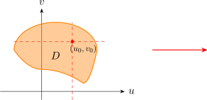
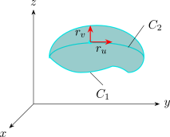

2.5 Tangent Planes To Parametric Surfaces
Given a parametric surface \(S\) traced out by a vector equation \[r(u,v) = x(u,v)\, \textbf {i} + y(u,v)\,\textbf {j} + z(u,v)\,\textbf {k}\] and a point \(P\) with position vector \(r(u_0,v_0)\). Keeping \(u\) constant, \(u=u_0\) then \(r(u_0,v)\) becomes a vector function of the single parameter \(v\), and defines a grid \(C_1\) lying on \(S\).
Tangent vector to \(C_1\) at \(P_0\) is \[r_v = \frac {\partial x}{\partial v}(u_0,v_0)\,\textbf {i} + \frac {\partial y}{\partial v}(u_0,v_0)\,\textbf {j} +\frac {\partial z}{\partial v}(u_0,v_0)\,\textbf {k}\]
|  |  |
Similarly keep \(v\) constant, we get a grid \(C_2\) given given by \(r(u,v_0)\) that lies on \(S\) and its tangent is
\[r_u = \frac {\partial x}{\partial u}(u_0,v_0)\,\textbf {i} + \frac {\partial y}{\partial u}(u_0,v_0)\,\textbf {j} +\frac {\partial z}{\partial u}(u_0,v_0)\,\textbf {k}\]
If \(r_u \times r_v\) is not 0, then the surface is smooth. For a smooth surface the tangent plane is the plane that contains the tangent vectors \(r_u\), \(r_v\) and \(r_u \times r_v\) is a normal vector to the tangent place.
Find the tangent plane to the surface with parametric equation \[x =u^2\hspace {0.4cm},\hspace {0.4cm} y = v^2\hspace {0.4cm} , \hspace {0.4cm} z = u + 2v\] at the point \((1,1,3)\).
Solution.
\(r(u,v) = u^2 \,\textbf {i} + v^2\,\textbf {j} + (u + 2v)\,\textbf {k}\)
\(r_u = \dfrac {\partial x}{\partial u}\,\textbf {i} + \dfrac {\partial y}{\partial u}\,\textbf {j} + \dfrac {\partial z}{\partial u}\,\textbf {k}\)
\(r_u = 2u\,\textbf {i} + 0\,\textbf {j} + \textbf {k}\)
\(\implies \hspace {1cm} r_u = 2u\,\textbf {i} + \textbf {k}\)
\[\implies \hspace {1cm} r_v = 2v\,\textbf {j}+ 2\,\textbf {k}\]
Normal vector to the tangent plane is \begin {align*} r_u \times r_v & = \begin {vmatrix} \textbf {i} & \textbf {j} & \textbf {k}\\ 2u & 0 & 1\\ 0 & 2v & 2\\ \end {vmatrix}\\\\ & = -2v\,\textbf {i} -4u\,\textbf {j} + 4uv\,\textbf {k} \end {align*}
\((1,1,3)\) corresponds to \(u=1,\hspace {0.3cm} v =1\)
\(\therefore \) normal vector is \(-2\,\textbf {i} -4\,\textbf {j} + 4\,\textbf {k}.\)
\(\therefore \) Equation of the tangent plane at \((1,1,3)\) is \[-2(x-1) -4(y-1) + 4(z-3) =0\]
\[\implies \hspace {1cm} x+ 2y -2z + 3 = 0\]
Questions on this section
Stuck on something here? Ask below and it stays attached to this topic.